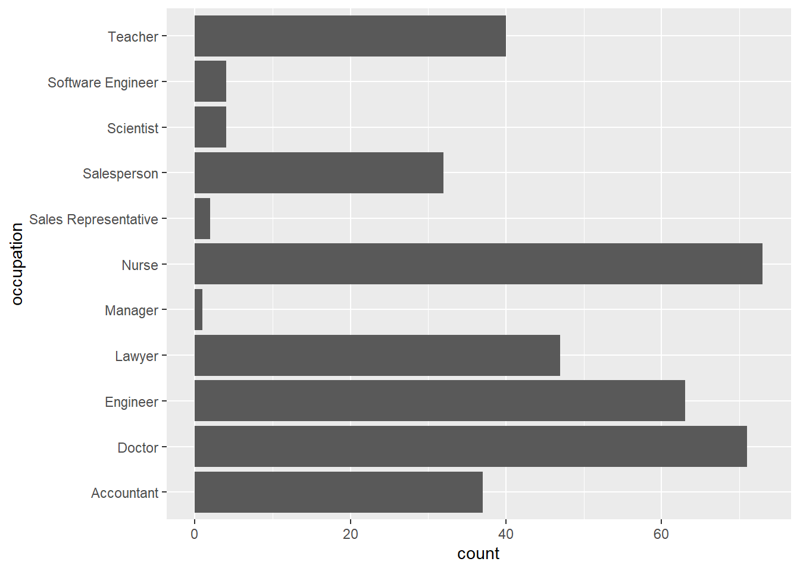
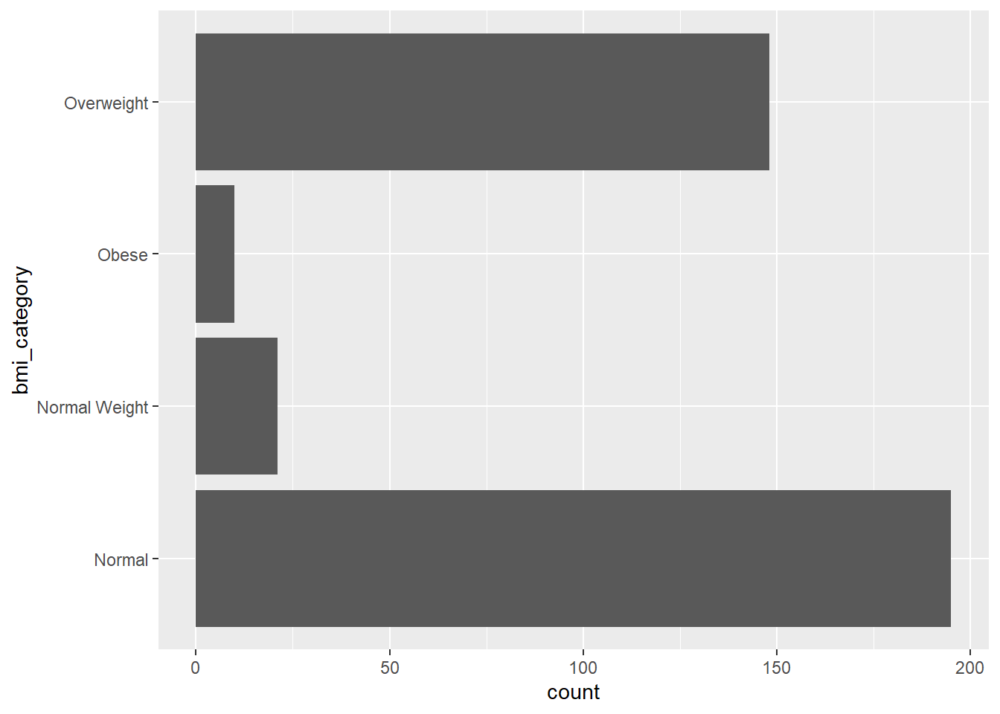
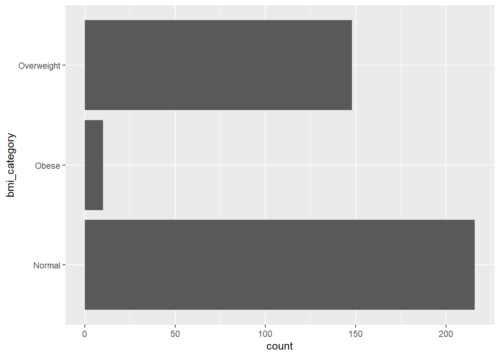
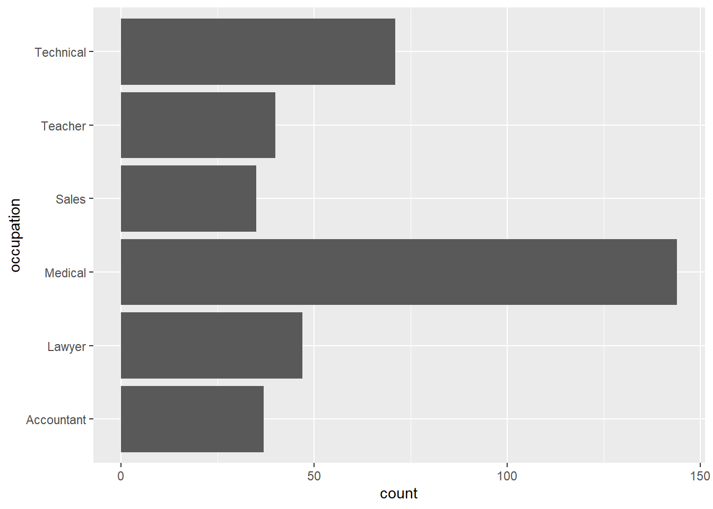
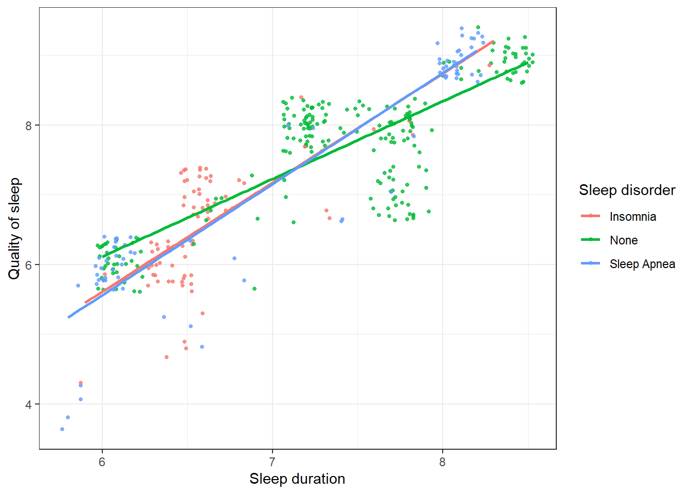

Occupation variable having levels with very few counts. Those with few counts can be consolidated with similar categories.
The BMI category variable has both “Normal” and “Normal Weight” as levels. This is most likely as data entry error.
The heart rate variable is not in a suitable format to work with. I’ll extract the systolic blood pressure from the variable as an integer. I would not need the diastolic blood pressure as I observed strong multicollinearity between both diastolic and systolic blood pressure.
# observe occupations with low frequency countsggplot(sleep, aes(occupation))+geom_bar() +coord_flip()

# observe data entry error in bmi_category variableggplot(sleep, aes(bmi_category))+geom_bar() +coord_flip()

# regrouping occupation variable so that occupations with lower counts are consolidated with other similar occupations. Simultaneously correcting data entry error in bmi_category variablesleep <- sleep %>%mutate( occupation=ifelse(sleep$occupation %in%c("Software Engineer", "Scientist", "Engineer"),"Technical", ifelse(sleep$occupation %in%c("Salesperson", "Sales Representative", "Manager"), "Sales", ifelse(sleep$occupation %in%c("Doctor", "Nurse"), "Medical",as.character(occupation)))),bmi_category =ifelse(sleep$bmi_category %in%c("Normal", "Normal Weight"), "Normal", as.character(sleep$bmi_category)))
# extracting systolic blood pressure from the blood_pressure variable as it such a numeric variable is easier to work with. Subsequently dropping hear_rate variablesleep <- sleep %>%mutate(bp_sys=parse_number(str_sub(sleep$blood_pressure, 1, 3)),person_id =as.character(person_id)) %>%select(!heart_rate)
# confirming changeshead(sleep) %>%kable()
person_id
gender
age
occupation
sleep_duration
quality_of_sleep
physical_activity_level
stress_level
bmi_category
blood_pressure
daily_steps
sleep_disorder
bp_sys
1
Male
27
Technical
6.1
6
42
6
Overweight
126/83
4200
None
126
2
Male
28
Medical
6.2
6
60
8
Normal
125/80
10000
None
125
3
Male
28
Medical
6.2
6
60
8
Normal
125/80
10000
None
125
4
Male
28
Sales
5.9
4
30
8
Obese
140/90
3000
Sleep Apnea
140
5
Male
28
Sales
5.9
4
30
8
Obese
140/90
3000
Sleep Apnea
140
6
Male
28
Technical
5.9
4
30
8
Obese
140/90
3000
Insomnia
140
# confirming changes to BMI category variableggplot(sleep, aes(bmi_category))+geom_bar() +coord_flip()

# confirming changes to occupation variableggplot(sleep, aes(occupation))+geom_bar() +coord_flip()

Summary statistics
We are going to explore summary statistics particularly for our variables of interest
Warning: package 'correlation' was built under R version 4.3.2
library(GGally)
Warning: package 'GGally' was built under R version 4.3.2
Registered S3 method overwritten by 'GGally':
method from
+.gg ggplot2
# plotting the grid plot of scatterplots of numeric variablesggscatmat(sleep %>%select_if(is.numeric)) +theme_light()
Warning: The dot-dot notation (`..scaled..`) was deprecated in ggplot2 3.4.0.
ℹ Please use `after_stat(scaled)` instead.
ℹ The deprecated feature was likely used in the GGally package.
Please report the issue at <https://github.com/ggobi/ggally/issues>.
# showing relationships with strong correlations (greater than |+-0.4|)correlates_tib <- sleep |>select(where(is.numeric)) |>correlation() %>%as.tibble() %>%select(!c(CI:df_error,Method,n_Obs)) %>%filter(abs(r) >0.4) %>%arrange(r)
Warning: `as.tibble()` was deprecated in tibble 2.0.0.
ℹ Please use `as_tibble()` instead.
ℹ The signature and semantics have changed, see `?as_tibble`.
correlates_tib %>%kable(digits=3)
Parameter1
Parameter2
r
p
quality_of_sleep
stress_level
-0.899
0
sleep_duration
stress_level
-0.811
0
age
stress_level
-0.422
0
age
quality_of_sleep
0.474
0
age
bp_sys
0.606
0
physical_activity_level
daily_steps
0.773
0
sleep_duration
quality_of_sleep
0.883
0
# robust correlation analysis since the data are skewed. Results is filtered to include only relationships involving quality_of_sleep. Sorted ascendingly by p-valuecorrelates_tib <- sleep |>select(where(is.numeric)) |>correlation(method="percentage") %>%as.tibble() %>%select(!c(CI:df_error,Method,n_Obs)) %>%arrange(p) %>%filter( Parameter1 =="quality_of_sleep"| Parameter2 =="quality_of_sleep") %>%arrange(p) %>%filter(p <0.05)correlates_tib %>%kable(digits=3)
Parameter1
Parameter2
r
p
quality_of_sleep
stress_level
-0.910
0.000
sleep_duration
quality_of_sleep
0.892
0.000
age
quality_of_sleep
0.432
0.000
quality_of_sleep
physical_activity_level
0.178
0.005
Results
The most significant relationships (at alpha = .05) are the relationships between:
quality of sleep and stress level, r(372) =-0.91, p < 0.0001
quality of sleep and sleep duration, r(372) = 0.89, p < 0.0001
quality of sleep and age, r(372) =0.43, p < 0.0001
quality of sleep and physical activity level, r(372) =0.18, p = 0.0054
These are the variables we would fit to our linear regression model.
Fitting a GLM
Research Question: “Which GLM model best explains quality of sleep”
Looking at the bottom row of the plots, we see the scatterplot of all the variables against quality_of_sleep on the y_axis.
The four predictors have reasonably linear relationships with the sleep quality and there are no obvious outliers (except maybe in the bottom left of the scatterplot with band image). Across the diagonal, we see the distributions of scores. None of the variables have a normal distribution, exhibiting various degrees of modality.
If we look only at the predictors, then the highest correlation is between sleep duration and stress level which is significant at the 0.0001 level (r = -0.81). Focussing on the outcome variable, of all of the predictors, stress level and sleep duration correlate best with the outcome (rs = -0.9 and 0.88 respectively).
One predictor model
qs_lm_01 <-lm(data=sleep, formula = quality_of_sleep ~ stress_level)# checking model fitglance(qs_lm_01) %>%kable(digits =3)
r.squared
adj.r.squared
sigma
statistic
p.value
df
logLik
AIC
BIC
deviance
df.residual
nobs
0.808
0.807
0.526
1563.033
0
1
-289.06
584.121
595.893
102.735
372
374
Stress level accounts for 80.8% of the variation in quality of sleep.
Therefore, we can say that adding the predictor of stress_level significantly improved the fit of the model to the data compared to having no predictors in the model, F(1, 372) = 1563.03, p < .001
Model parameters
tidy(qs_lm_01, conf.int = T) %>%kable(digits=3)
term
estimate
std.error
statistic
p.value
conf.low
conf.high
(Intercept)
10.577
0.087
121.678
0
10.406
10.748
stress_level
-0.606
0.015
-39.535
0
-0.636
-0.576
If stress level increases by 1 point, quality_of_sleep reduces by more than half a point. This estimate is significant (p < 0.0000001). With the chance of being wrong 5% of the time, our estimate is going to be somewhere in the range [-0.636, -0.576]. This confidence interval does not cross zero, so we can be sure that a real effect exists.
# summary of the model parameters and fitsummary(qs_lm_01)
Call:
lm(formula = quality_of_sleep ~ stress_level, data = sleep)
Residuals:
Min 1Q Median 3Q Max
-1.7276 -0.1525 0.2413 0.2724 1.0600
Coefficients:
Estimate Std. Error t value Pr(>|t|)
(Intercept) 10.57739 0.08693 121.68 <2e-16 ***
stress_level -0.60623 0.01533 -39.53 <2e-16 ***
---
Signif. codes: 0 '***' 0.001 '**' 0.01 '*' 0.05 '.' 0.1 ' ' 1
Residual standard error: 0.5255 on 372 degrees of freedom
Multiple R-squared: 0.8078, Adjusted R-squared: 0.8072
F-statistic: 1563 on 1 and 372 DF, p-value: < 2.2e-16
Multiple predictors
qs_lm_02 <-lm(quality_of_sleep ~ stress_level+sleep_duration+age+physical_activity_level, data=sleep)# fit statisticsglance(qs_lm_02) %>%kable(digits =3)
r.squared
adj.r.squared
sigma
statistic
p.value
df
logLik
AIC
BIC
deviance
df.residual
nobs
0.892
0.891
0.395
762.735
0
4
-181.05
374.1
397.645
57.66
369
374
The % of variance explained by the predictors increased to 89% from our previous value of 81%.
In other words, sleep duration, age and physical activity level account for an additional 89% - 80.8% = 8.2% of the variance in quality of sleep. The difference between the \(R^2\) and the adjusted \(R^2\) is 0.8921-0.8909= 0.0012. Which means if the model were derived from the population rather than a sample we’d conclude that it accounted for approximately 0.12% less variance in the outcome.
Model parameter estimates
tidy(qs_lm_02, conf.int=T) %>%kable(digits =3)
term
estimate
std.error
statistic
p.value
conf.low
conf.high
(Intercept)
3.957
0.439
9.023
0
3.095
4.819
stress_level
-0.351
0.021
-16.466
0
-0.392
-0.309
sleep_duration
0.621
0.046
13.372
0
0.529
0.712
age
0.014
0.003
5.180
0
0.009
0.019
physical_activity_level
0.004
0.001
3.796
0
0.002
0.006
Stress level : For every unit increase in stress level, quality of sleep reduces by 0.35 points. This interpretation is true only if the other variables are held constant.
Sleep duration: For every unit increase in sleep duration, quality of sleep increases by 0.62 points. This interpretation is true only if the other variables are held constant.
Age: For one year difference in the age of respondents, quality of sleep increases by 0.01 points. This interpretation is true only if the other variables are held constant.
Physical activity level: For every unit increase in sleep duration, quality of sleep increases by 0.004 points. This interpretation is true only if the other variables are held constant.
# generating standard deviations to interpret standardised betassleep %>%select(stress_level, age, sleep_duration, physical_activity_level, quality_of_sleep) %>%skim() %>%as_tibble() %>%select(skim_variable, numeric.sd) %>%kable(digits =3)
skim_variable
numeric.sd
stress_level
1.775
age
8.673
sleep_duration
0.796
physical_activity_level
20.831
quality_of_sleep
1.197
Stress level : As the stress level increases by 1 standard deviation (1.77 points), quality of sleep reduces by 0.52 standard deviations (0.52 × 1.197) = 0.622 points. This estimate is significant at alpha = .001 level. This interpretation is true only if the effects of airplay and advertising are held constant.
Sleep duration: As the sleep duration increases by 1 standard deviation (0.8 points), quality of sleep increases by 0.41 standard deviations (0.41 × 1.197) = 0.491 points. This estimate is significant at alpha = .001 level. This interpretation is true only if the effects of airplay and advertising are held constant.
Age: As age increases by 1 standard deviation (8.67 years), quality of sleep increases by 0.10 standard deviations (0.10 × 1.197) = 0.12 points. This estimate is significant at alpha = .001 level. This interpretation is true only if the effects of airplay and advertising are held constant.
Physical activity level: As the physical activity level increases by 1 standard deviation (20.83 points), quality of sleep increases by 0.07 standard deviations (0.07 × 1.197) = 0.08 points. This estimate is significant at alpha = .001 level. This interpretation is true only if the effects of airplay and advertising are held constant.
lag Autocorrelation D-W Statistic p-value
1 0.4577484 1.083912 0
Alternative hypothesis: rho != 0
Since the D-W statistic is not less than 1 or greater than 3, we can be fairly confident that this assumption is met.
Assumptions of Multicollinearity
car::vif(qs_lm_02)
stress_level sleep_duration age
3.406796 3.256354 1.262757
physical_activity_level
1.153822
mean(car::vif(qs_lm_02))
[1] 2.269932
# tolerance1/car::vif(qs_lm_02)
stress_level sleep_duration age
0.2935310 0.3070919 0.7919178
physical_activity_level
0.8666849
If the largest VIF is greater than 10 then there is cause for concern (Bowerman & O’Connell, 1990; Myers, 1990). If the average VIF is substantially greater than 1 then the regression may be biased (Bowerman & O’Connell, 1990). Tolerance below 0.1 indicates a serious problem. Tolerance below 0.2 indicates a potential problem (Menard, 1995).
Since our average VIF is greater than 1, our model may be biased
Robust linear methods
Our model appears to be accurate for the sample and but not necessarily generalizable to the population because of some GLM assumption violations. Time to use robust methods.
Robust parameter estimates
Now we check for the significance of the test of bias and we compare their corresponding coefficients.
qs_lm_rob <-lmRob(quality_of_sleep ~ stress_level+sleep_duration+age+physical_activity_level, data = sleep, na.action = na.exclude)summary(qs_lm_rob)
Call:
lmRob(formula = quality_of_sleep ~ stress_level + sleep_duration +
age + physical_activity_level, data = sleep, na.action = na.exclude)
Residuals:
Min 1Q Median 3Q Max
-1.105750 -0.034463 0.004544 0.572389 1.344101
Coefficients:
Estimate Std. Error t value Pr(>|t|)
(Intercept) 8.5862994 0.1278987 67.134 < 2e-16 ***
stress_level -0.5876346 0.0057227 -102.686 < 2e-16 ***
sleep_duration 0.0989499 0.0137276 7.208 3.23e-12 ***
age 0.0060295 0.0006261 9.630 < 2e-16 ***
physical_activity_level 0.0138005 0.0003576 38.589 < 2e-16 ***
---
Signif. codes: 0 '***' 0.001 '**' 0.01 '*' 0.05 '.' 0.1 ' ' 1
Residual standard error: 0.1386 on 369 degrees of freedom
Multiple R-Squared: 0.4484
Test for Bias:
statistic p-value
M-estimate 13.08 0.02267
LS-estimate 10.10 0.07233
summary(qs_lm_02)
Call:
lm(formula = quality_of_sleep ~ stress_level + sleep_duration +
age + physical_activity_level, data = sleep)
Residuals:
Min 1Q Median 3Q Max
-1.34804 -0.26046 0.01664 0.24112 1.03722
Coefficients:
Estimate Std. Error t value Pr(>|t|)
(Intercept) 3.957065 0.438560 9.023 < 2e-16 ***
stress_level -0.350549 0.021289 -16.466 < 2e-16 ***
sleep_duration 0.620714 0.046420 13.372 < 2e-16 ***
age 0.013736 0.002652 5.180 3.66e-07 ***
physical_activity_level 0.004006 0.001055 3.796 0.000172 ***
---
Signif. codes: 0 '***' 0.001 '**' 0.01 '*' 0.05 '.' 0.1 ' ' 1
Residual standard error: 0.3953 on 369 degrees of freedom
Multiple R-squared: 0.8921, Adjusted R-squared: 0.8909
F-statistic: 762.7 on 4 and 369 DF, p-value: < 2.2e-16
There is reason to believe that our original model, qs_lm_02, is biased. First, the M-estimate is significant
Bayesian approaches
qs_bf <- BayesFactor::regressionBF(quality_of_sleep ~ stress_level + sleep_duration + age + physical_activity_level, rscaleCont ="medium", data = sleep)
The best model is model 15 since it has largest Bayes Factor of 8.47 * 10^42
Moderation and mediation analysis
Research questions:
Is the relationship between sleep_duration and quality of sleep moderated by sleep disorder?
Is the relationship between stress level and quality of sleep moderated by occupation?
Is the relationship between physical activity and quality of sleep mediated by daily steps?
Is the relationship between sleep duration and quality of sleep moderated by sleep disorder?
# Visualizing the relationship of the three variablesggplot(sleep, aes(x = sleep_duration, y = quality_of_sleep, color = sleep_disorder)) +geom_jitter(size=1, alpha=0.8) +labs(x ="Sleep duration", y ="Quality of sleep", color ="Sleep disorder") +geom_smooth(method ="lm", se =FALSE, linewidth=0.9) +theme_bw()
`geom_smooth()` using formula = 'y ~ x'

The plot shows that there might be some moderation effects.
# making sleep_disorder a factor variable and setting the base level to "None"sleep <- sleep %>%mutate(sleep_disorder =as_factor(sleep_disorder) %>%fct_relevel("None"))
Warning: Johnson-Neyman intervals are not available for factor moderators.
SIMPLE SLOPES ANALYSIS
Slope of sleep_duration when sleep_disorder = Insomnia:
Est. S.E. 2.5% 97.5% t val. p
------ ------ ------ ------- -------- ------
1.56 0.15 1.26 1.86 10.26 0.00
Slope of sleep_duration when sleep_disorder = Sleep Apnea:
Est. S.E. 2.5% 97.5% t val. p
------ ------ ------ ------- -------- ------
1.59 0.06 1.48 1.71 27.35 0.00
Slope of sleep_duration when sleep_disorder = None:
Est. S.E. 2.5% 97.5% t val. p
------ ------ ------ ------- -------- ------
1.11 0.03 1.05 1.17 36.50 0.00
The slopes for the three regressions are not significantly different
Warning: Johnson-Neyman intervals are not available for factor moderators.
SIMPLE SLOPES ANALYSIS
Slope of stress_level when occupation = Lawyer:
Est. S.E. 2.5% 97.5% t val. p
------- ------ ------- ------- -------- ------
-0.95 0.03 -1.02 -0.89 -29.71 0.00
Slope of stress_level when occupation = Accountant:
Est. S.E. 2.5% 97.5% t val. p
------- ------ ------- ------- -------- ------
-0.32 0.04 -0.40 -0.24 -7.92 0.00
Slope of stress_level when occupation = Teacher:
Est. S.E. 2.5% 97.5% t val. p
------- ------ ------- ------- -------- ------
-0.47 0.09 -0.65 -0.28 -5.01 0.00
Slope of stress_level when occupation = Sales:
Est. S.E. 2.5% 97.5% t val. p
------- ------ ------- ------- -------- ------
-1.00 1.04 -3.04 1.04 -0.97 0.33
Slope of stress_level when occupation = Medical:
Est. S.E. 2.5% 97.5% t val. p
------- ------ ------- ------- -------- ------
-0.61 0.01 -0.62 -0.59 -81.54 0.00
Slope of stress_level when occupation = Technical:
Est. S.E. 2.5% 97.5% t val. p
------- ------ ------- ------- -------- ------
-0.79 0.07 -0.93 -0.65 -10.97 0.00
The total effect is approximately 0.011, meaning that an increase of one unit in physical activity increases sleep quality by 0.001 units on average, not holding daily steps constant.
Mediated/Indirect Effect
The effect of physical_activity_level on quality_of_sleep mediated by daily_steps can be obtained by multiplying together the effect of physical_activity_level on daily_steps and the effect of daily_steps on quality_of_sleep.
This is simply the coefficient of physical_activity_level in the above regression = 0.0257
According to Zhao et al., what we have here isCompetitive Mediation (Regularly Partial Mediation)
In the competitive partial mediation hypothesis, it is assumed that the intermediate variable (daily_steps) could sometimes increase and at times decrease the relationship between the independent and dependent variables. i.e an “inconsistent” model.
Decision tree for determining mediation
Difference in means
Research question: are significant differences in the mean sleep quality of both male and female participants
# summary statistics of quality_of_sleep by genderby(cbind(data=sleep$quality_of_sleep), sleep$gender, psych::describe)
INDICES: Female
vars n mean sd median trimmed mad min max range skew kurtosis se
data 1 185 7.66 1.28 8 7.76 1.48 4 9 5 -0.49 -0.83 0.09
------------------------------------------------------------
INDICES: Male
vars n mean sd median trimmed mad min max range skew kurtosis se
data 1 189 6.97 1 7 7.01 1.48 4 9 5 -0.35 -0.59 0.07
The mean of female participants is one point higher than males. But is this difference significant?
# plotting a violin-errorbar plot to visualise the relationshipggplot(sleep, aes(gender,quality_of_sleep))+geom_violin() +stat_summary(fun.data="mean_cl_normal") +theme_minimal()
Registered S3 method overwritten by 'Hmisc':
method from
vcov.default fit.models
Since the errorbars do not overlap, we can be fairly confident that the difference is significant. Lets confirm this hunch with a Welsh’s t-test.
Welch Two Sample t-test
data: quality_of_sleep by gender
t = 5.8593, df = 347.96, p-value = 1.078e-08
alternative hypothesis: true difference in means between group Female and group Male is not equal to 0
95 percent confidence interval:
0.4627786 0.9304432
sample estimates:
mean in group Female mean in group Male
7.664865 6.968254
Because the p-value = 1.078e-08 is less than our alpha of .05, we can conclude that the difference between both genders is significant. Also, since the confidence interval expressing the true difference in means does not cross zero, we can be confident that there exists a true difference, with a chance of us being wrong 5% of the time.
effectsize::cohens_d(quality_of_sleep ~ gender, data = sleep) |> knitr::kable(digits =3)
Cohens_d
CI
CI_low
CI_high
0.608
0.95
0.4
0.815
On average, female participants have better sleep quality (M = 7.66, SE = 0.09), than those not given a cloak (M = 6.97, SE = 0.07). Sleep quality is significantly different for both genders: the mean difference, M = 0.69, 95% CI [0.46, 0.93], was significantly different from 0, t(347.96) = 5.85, p = 01.078e-08. This effect was quite large, d= 0.61[0.4, 0.82]
.jpg)